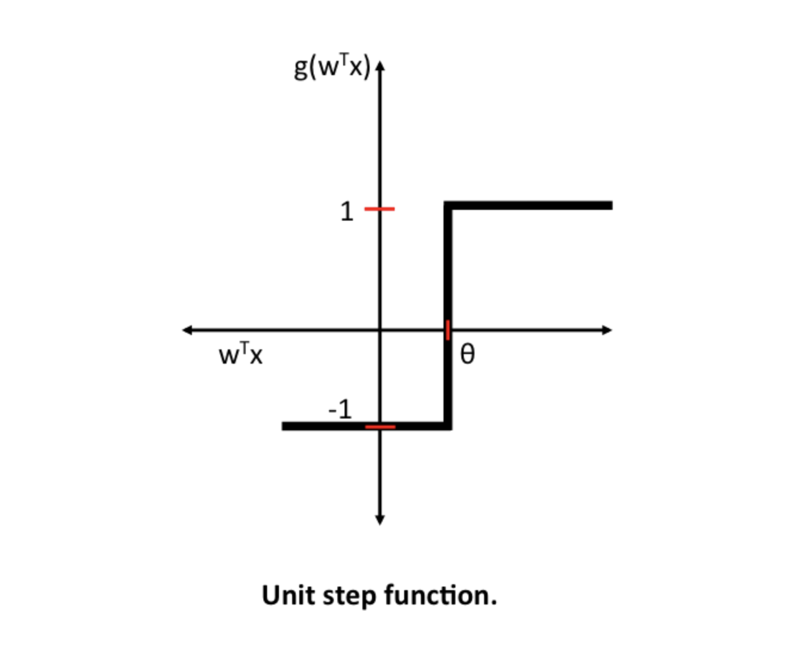
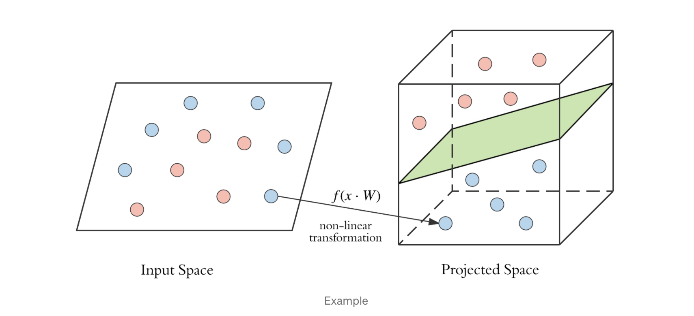
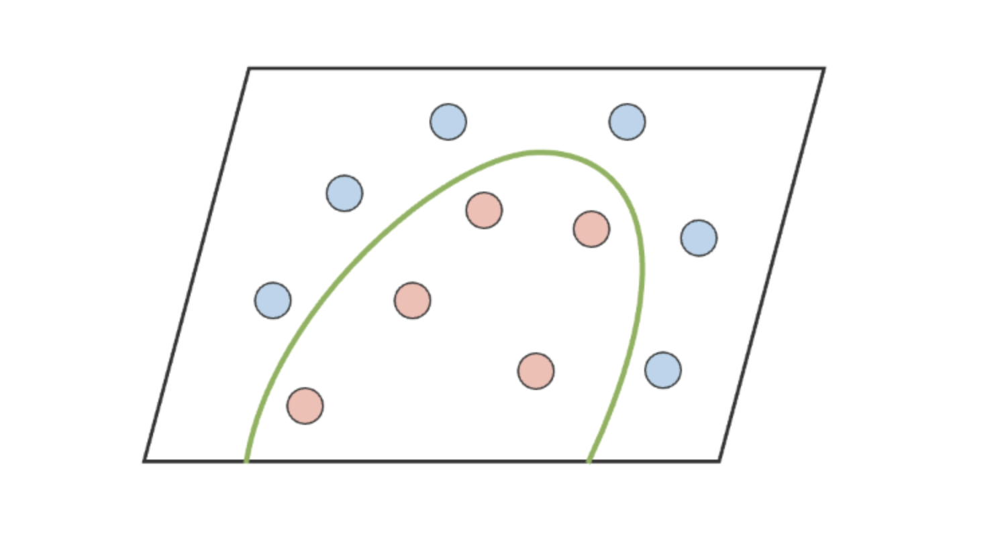
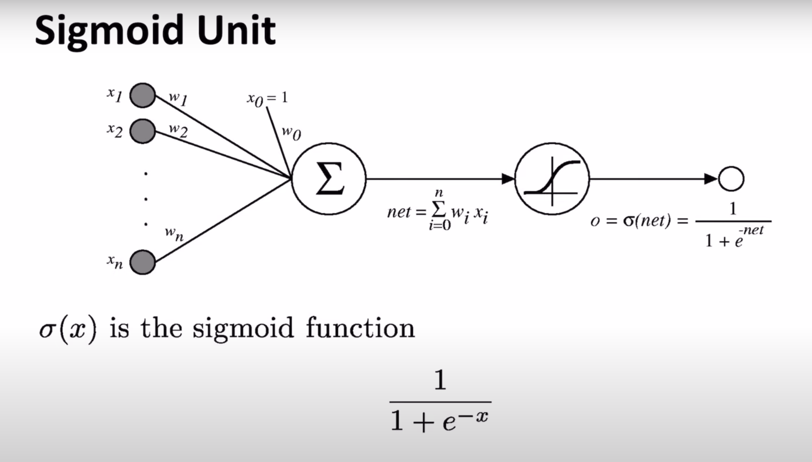
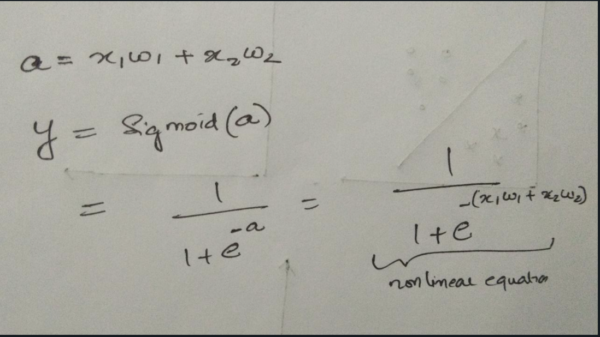
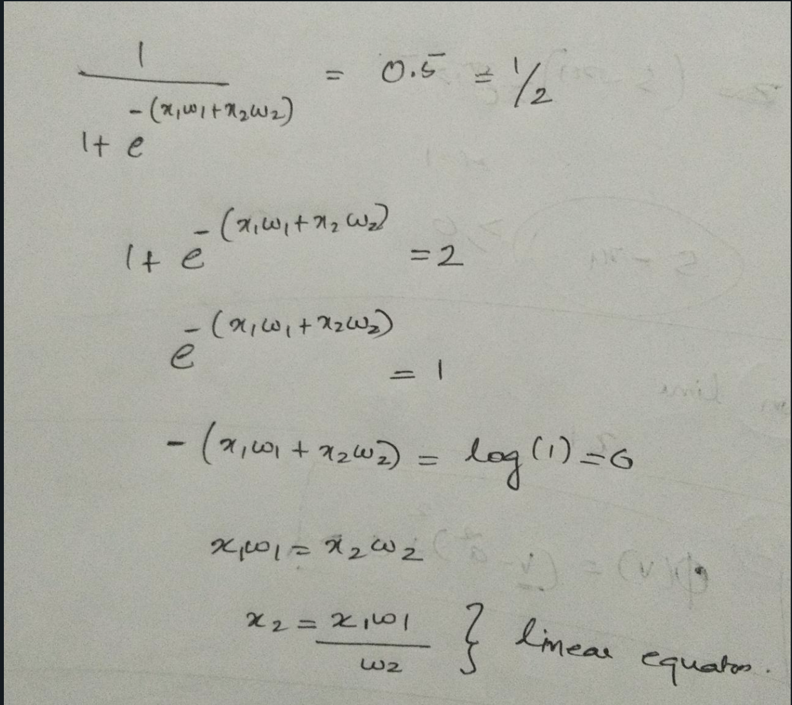
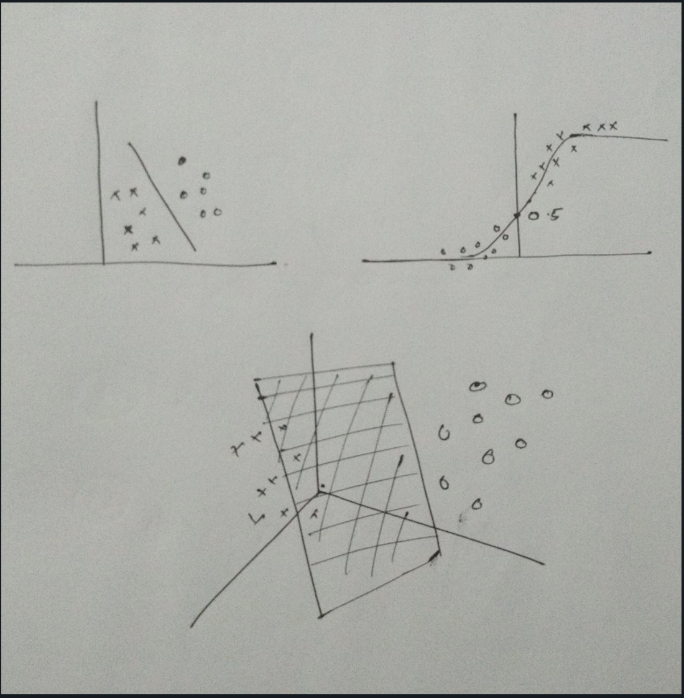

So far we have been discussing the single-layer perceptrons ( also known as the primitive neural network) and during my discussion with my friend how we can relate the decision boundary and the activation function. That really got me thinking 🧐 … Actually I knew that the derivative of the activation function has something to do with the decision boundary but don't know more about it 😬.Anyway at least I know when we assign the induced local field to zero we can calculate the decision boundary ( provided the threshold we consider is zero).
Let us demystify the impacts of activation functions on the decision boundary 👩💻
We know the threshold (Ө) based approach we select for activation functions they also known as Heaviside step functions and it produces a binary output.
The main idea of checking the activation functions are differentiable or not comes from the context of the multilayer neural network. The backpropagation algorithm that trains the NN uses the derivatives of the activation function as a multiplier to update weights. The non-linear activation function helps to create a non-linear decision boundary to separate the original data
Check the pictorial representation on how the sigmoid function creates a complex decision boundary on the non linear data.
 But it does not our actual question..Let us dig in deeper 🕵️♀️
What is the decision boundary? In a statistical classification problem with two classes, a decision boundary or decision surface is a hypersurface that partitions the underlying vector space into two sets. A decision boundary is the region of the problem space in which the output label of a classifier is ambiguous.
If the decision surface is a hyperplane then the classification problem is linear and classes are linearly separable.
Also in geometry, a hyperplane is a subspace whose dimension is one less than that of its ambient space. If space is 3D then its hyperplanes are 2D planes, similarly, for 2D it will be a 1D line( All thanks to Wikipedia)
And again how a non-linear activation function gives a hyperplane that separates classes linearly?😓
Here we have only one set of input and one set of weights right? To draw the hyperplane being created with that just solve X.w = threshold ( which I kind of address earlier 🤭)
However, if you add in hidden layers, you no longer necessarily have a hyperplane, as in order to be a hyperplane it must be able to be expressed as the "solution of a single algebraic equation of degree 1." Which clearly says that the hyperplane is linear. To solve more complex transfer functions or more complex networks for non-linearly separable problems.
Let us take an example of the sigmoid function,
In the case of a primitive perceptron, the equations will be as follows
So now let us look into the weights being calculated
If the value is above 0.5 then the perceptron will classify into 1, conversely, if the value is below 0.5 then it classifies it to 0. So the decision boundary is at 0.5. To find the hyperplane or decision boundary equate the output to 0.5 and check whether it is a linear equation of degree 1.
 Although my drawing skills not up to the mark, I explained the concepts.
If you still have doubts don’t worry as I always say we are learning together….at some point of time, we will figure it out.